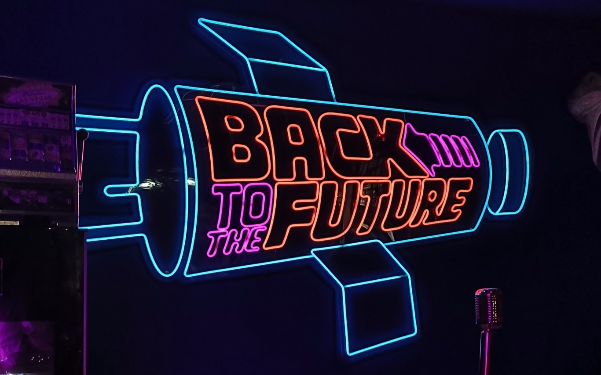
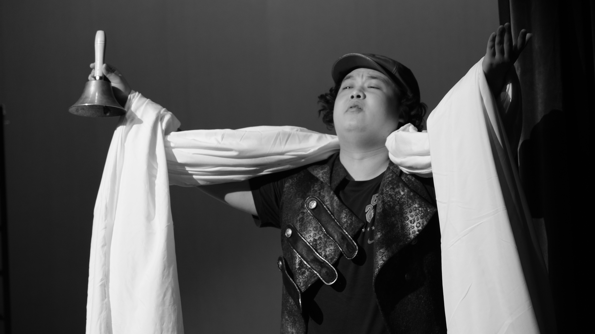

Game Design · Narrative Design
Min Yun Pan
你好，我是一名关注系统设计、互动叙事与玩家体验的游戏设计者，兼具游戏设计与戏剧文学背景，也热衷于桌面角色扮演游戏。
Hi, I’m a game designer focused on systems, interactive storytelling, and player experience. My background spans both game design and dramatic literature, and I’m also passionate about tabletop role-playing games.

我的项目My Projects



NARRATIVE · WRITING叙事与写作Characters · Game Copy · Interactive Fiction
叙事与写作Narrative & Writing
人物创作、游戏文案、互动文学与其他写作作品。
查看作品A Chinese-language selection of character writing, game copy, interactive fiction and other narrative work.
View writing